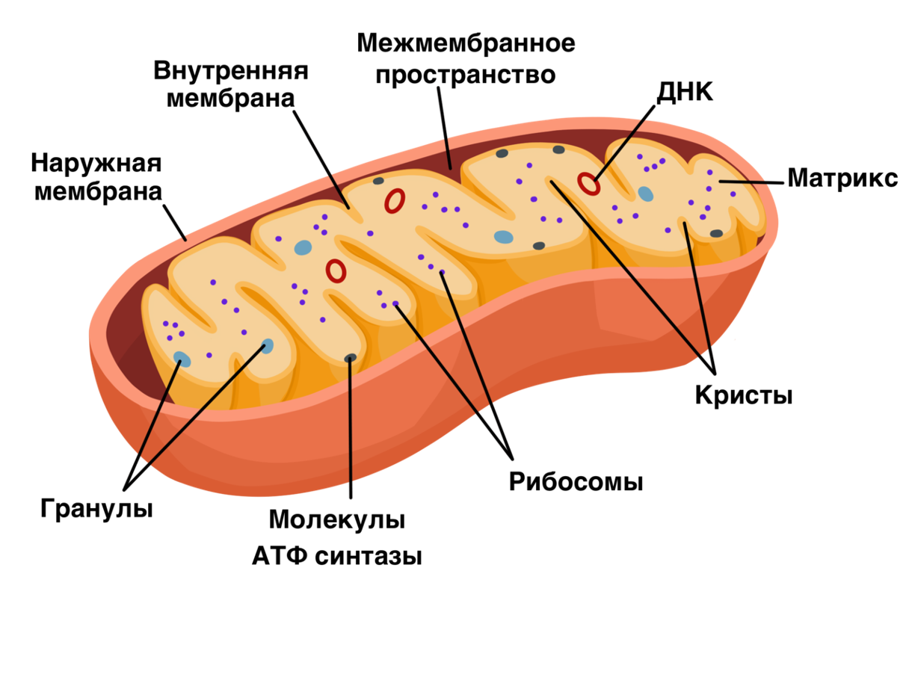
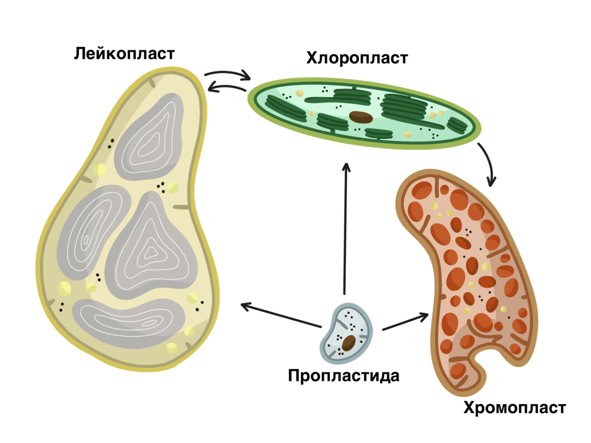

Митохондрии осуществляют кислородный этап дыхания, играя роль «энергетических станций» клетки. Пластиды бывают трех типов: хлоропласты, хромопласты и лейкопласты. Хлоропласты содержат зеленый пигмент хлорофилл и осуществляют фотосинтез. Хромопласты содержат пигменты из группы каротиноидов, которые придают им окраску от красного до желтого; их наличие обеспечивает окраску плодов и других органов растений. Лейкопласты — бесцветные пластиды, накапливающие зерна крахмала.
Двумембранные органеллы называют также полуавтономными, подчеркивая большую степень их самостоятельности в клетке. Прежде всего, это означает, что они могут делиться. Новые митохондрии и пластиды образуются только путем деления существующих. У этих органелл имеется собственный геном — кольцевая молекула ДНК, напоминающая ДНК бактерий. Она содержит гены, кодирующие часть белков органеллы. Другая часть кодируется в ядре и поступает из цитоплазмы (поэтому митохондрии и пластиды не могут жить свободно, вне клетки). Также эти органеллы имеют свой собственный аппарат синтеза белка, то есть рибосомы. Эти рибосомы более мелкие, чем в цитоплазме, и также похожи на рибосомы прокариот.
Все эти факты указывают на то, что двумембранные органеллы — это и есть прокариоты, которые когда-то вступили в симбиоз с древней эукариотической клеткой, поселившись внутри нее. Эукариоты часто фагоцитируют те или иные организмы, но не переваривают их, и они остаются жить в вакуолях. Часто в таких случаях встречается симбиоз, например у кораллов с некоторыми типами водорослей. Подобным же образом в эукариотической клетке поселились прокариоты — предки митохондрий, аэробные (способные к кислородному дыханию) бактерии из группы альфа-протеобактерий, а у растений — еще и предки хлоропластов — цианобактерии (зеленые прокариоты-фотосинтетики).
Когда в атмосфере накопился кислород, использование его для дыхания стало давать конкурентное преимущество. Кислородное окисление дает огромный выигрыш в энергии по сравнению с бескислородным. Поэтому симбиоз с предками митохондрий оказался полезным. Митохондрии имеются в клетках большинства эукариот (кроме тех, что утратили их вторично при переходе в бескислородные экологические ниши).
Цианобактерии обладали прогрессивным типом фотосинтеза, что дало преимущество «приютившим» их организмам. Все растения имеют тот же механизм фотосинтеза, что и цианобактерии, так как именно за счет симбиоза с ними «научились» фотосинтезировать.
Внешняя мембрана двумембранных органелл сходна по составу с мембранами эукариот, внутренняя сходна с мембранами прокариот. Это согласуется с гипотезой о том, что внешняя мембрана органеллы — это бывшая мембрана пищеварительной вакуоли (фагосомы), где оказался прокариотический симбионт, а внутренняя — это его собственная мембрана.
Такой внутренний симбиоз называют эндосимбиозом, а эту теорию происхождения двумембранных органелл — теорией эндосимбиогенеза.
Митохондрии
Снаружи митохондрии покрыты внешней мембраной, сходной с другими мембранами клетки. Расположенная под ней внутренняя мембрана отличается по липидному и белковому составу, напоминая мембрану бактерий. В ней высоко содержание белков, именно в ней находятся ферменты, осуществляющие окисление веществ кислородом, и синтез за счет этого АТФ. Для увеличения площади внутренняя мембрана митохондрий образует многочисленные складки — кристы. Между двумя мембранами находится изолированное от цитоплазмы межмембранное пространство. Внутри митохондрии находится пространство, называемое матрикс, в котором осуществляется расщепление различных веществ: жирных кислот, аминокислот и продуктов распада углеводов. В митохондриях имеются собственные рибосомы и ДНК. Они ответственны за образование части белков митохондрий.
Пластиды
Пластиды имеют наружную и внутреннюю мембраны и могут иметь внутренние мембранные мешочки (тилакоиды и ламеллы), которые представляют собой отпочковавшиеся внутрь впячивания внутренней мембраны. Все типы пластид образуются из пропластид, а также могут превращаться друг в друга.
Система внутренних мембран хлоропласта включает в себя совокупность мембранных каналов, называемых ламеллами, и интенсивно окрашенные образования, называемые гранами. Граны представляют собой стопки плоских мембранных пузырьков — тилакоидов, в мембранах которых содержится хлорофилл и осуществляются светозависимые реакции фотосинтеза. Внутренняя полость хлоропласта называется строма. Она заполнена раствором ферментов, осуществляющих темновые (светонезависимые) реакции фотосинтеза.